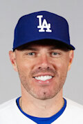
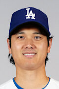

Los Angeles Dodgers to jeden z najbardziej utytułowanych zespołów w historii Major League Baseball. Z ponad 7 tytułami mistrza World Series oraz niezliczoną liczbą mistrzostw dywizji, Dodgers są symbolem sukcesu i tradycji w amerykańskim sporcie. Klub słynie nie tylko z doskonałej gry, ale także z wyjątkowej atmosfery na swoim stadionie – Dodger Stadium. Ich nieustanna chęć do rywalizacji, połączenie młodych talentów z doświadczonymi weteranami, sprawiają, że zawsze są w czołówce najlepszych drużyn MLB. Z dumą reprezentują Los Angeles, przyciągając kibiców z całego świata, a ich historia na stałe wpisała się w dzieje amerykańskiego baseballu.

FREDDY FREEMAN
Freddie Freeman to jeden z najlepszych pierwszobazowych w MLB. W 2022 roku dołączył do Los Angeles Dodgers, stając się jednym z filarów drużyny. Jego potężny atak oraz niesamowita stabilność na boisku sprawiają, że jest jednym z kluczowych graczy Dodgers, który niejednokrotnie przechylał szalę zwycięstwa na korzyść swojego zespołu.

SHOHEI OHTANI
Shohei Ohtani to prawdziwy fenomen MLB – miotacz i kijowy, który potrafi robić rzeczy niemożliwe. Znany z imponujących wyników zarówno na górce, jak i w ofensywie, Ohtani jest jednym z najbardziej ekscytujących graczy w całej historii baseballu. Jego talent i wszechstronność sprawiają, że Los Angeles Dodgers mają powód do dumy, posiadając tak unikalnego zawodnika w swojej drużynie.
LAD - STL
01.05.2025
Los Angeles Dodgers to drużyna z bogatą historią, która sięga swoich początków w 1883 roku, kiedy to klub został założony w Brooklynie jako Brooklyn Dodgers. Od samego początku drużyna zyskała status jednej z najbardziej charakterystycznych w MLB, a jej historia pełna jest przełomowych momentów. Najważniejszym z nich było przełamanie bariery rasowej przez Jackie'ego Robinsona w 1947 roku, który stał się pierwszym czarnoskórym graczem w MLB. To wydarzenie nie tylko zmieniło oblicze baseballu, ale również miało ogromne znaczenie społeczne, dając początek nowej erze integracji w amerykańskim sporcie.
Po przenosinach do Los Angeles w 1958 roku, Dodgers szybko stali się symbolem zachodniego wybrzeża, a ich obecność w Kalifornii dała drużynie nową tożsamość i jeszcze większą popularność. Z czasem drużyna osiągnęła kolejne sukcesy, wygrywając mistrzostwa i zdobywając serca fanów na całym świecie. Los Angeles Dodgers stali się jednym z najpotężniejszych zespołów w historii MLB, a ich dom – Dodger Stadium – stał się jednym z najbardziej rozpoznawalnych stadionów w sporcie. Na przestrzeni lat, drużyna wyprodukowała wielu legendarnych graczy, którzy zapisali się złotymi literami w historii baseballu.
W ciągu ostatnich kilku dekad Dodgers nieprzerwanie pozostają jedną z czołowych drużyn MLB, regularnie zdobywając mistrzostwa dywizji i walcząc o tytuł mistrza World Series. Klub słynie z doskonałego zarządzania, w którym młodzi gracze i doświadczeni weterani łączą siły, by osiągać jak najlepsze wyniki. W 2020 roku Dodgers po raz pierwszy od 32 lat zdobyli tytuł mistrza World Series, co stanowiło ukoronowanie ich wielkich ambicji. Historia drużyny to nie tylko osiągnięcia sportowe, ale także nieustanna walka o innowacje, integrację i wspólnotę z kibicami, którzy zawsze byli sercem tego legendarnego zespołu.